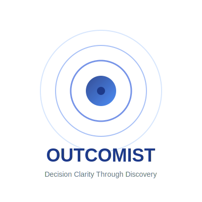
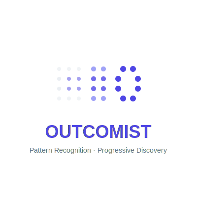
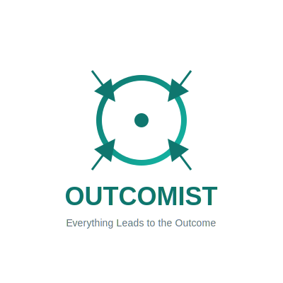

Decision exploration through pattern recognition and progressive discovery
Concentric circles representing progressive discovery (Tier 1→2→3→4). Symbolizes clarity emerging from center, ripple effect of understanding.
Dots forming a pattern that emerges from blur to clarity. Symbolizes pattern recognition - seeing what others can't see.
Stylized "O" with arrows converging to the target. Symbolizes that everything leads to the outcome - focused and directional.
Which concept best captures the Outcomist personality? Consider: professional sophistication, progressive discovery, pattern recognition.
Blues (trust/clarity), Indigo (intelligent/analytical), or Teal (outcome-focused)? Or try something different?
Primarily web app, CLI tool, or both? Will you need favicons, social media, print?
Want to refine one concept, explore variations, or try a different direction?